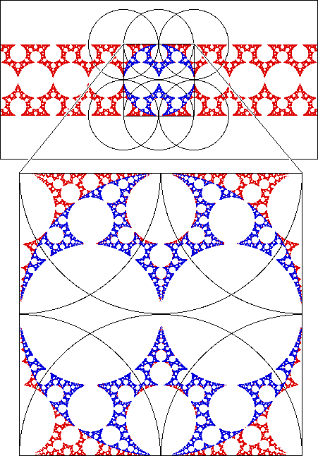

Here the limit set is generated by inversion in 6 circles, with non-tangential intersections of 60 degrees.
The limit set is shown in red; the blue subset is the restricted limit set, the points produced if a point inside a circle is never inverted in that circle.
|  |
Return to overlapping circles.